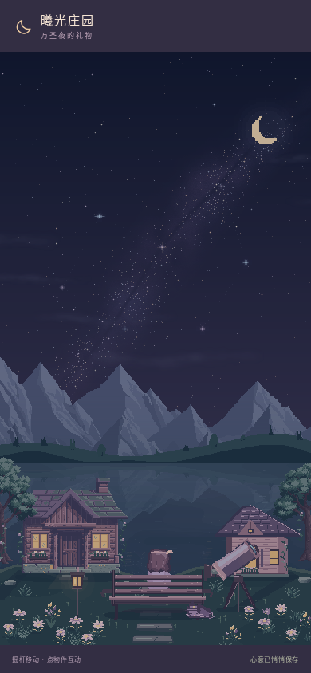

把日常的风景，认真画给小曦。
保留已经可以自由生活的庄园，细修光幕与群山、糖果屋、十二件家具和每一张功能面板。这一轮的改变，都来自实际运行的游戏。
本轮在独立分支交付，线上正式版未覆盖。预览不需要登录；预览域名与正式版的本地存档各自独立。进入游戏后，用「在庄园里漫游」或顶部星星选择风景。

 本轮开始前本轮完成后
本轮开始前本轮完成后390 × 844 · 同一机位、存档与视口 · 未使用生成式修图
同一片湖畔，四种光线。
从深夜到日光初升，再到清亮的白天和粉橘黄昏。可以在回忆册直接选择，也可以观看完整的连续日出。
风景会自己开始，也会安静下来。
首次夜间湖畔欣赏8秒后，星雨自然开始。结束后留24秒安静，再迎来远处的花火。屋顶与窗前先遇到烟花。回访减少频率，每次最多两段；手动跳过后不追播。拍照、静静欣赏、打开面板或减少动态时暂停。回忆册可关闭自动演出，或随时手动重看。
三套流星雨编排、七类烟花都有完整的升起、拖尾、余辉和消散；保留星星命名、心愿、制作、包装、换装、布置和存档。
本轮新增代码绘制美术，未新增第三方图片、字体或录音。山体与湖畔植物继续采用 karsiori 的13张本地CC0素材，统一色板和受光。极光参考NOAA自然现象说明，家具参考SLYNYRD的空间关系教程，没有复制其插图。
保留的边界：原角色行走帧未整套重画；六套湖畔坐姿未逐一补齐全部配饰；水面是艺术化分段反射。手机视口及WebKit模拟检查不能代替真实设备的GPU与续航验收。